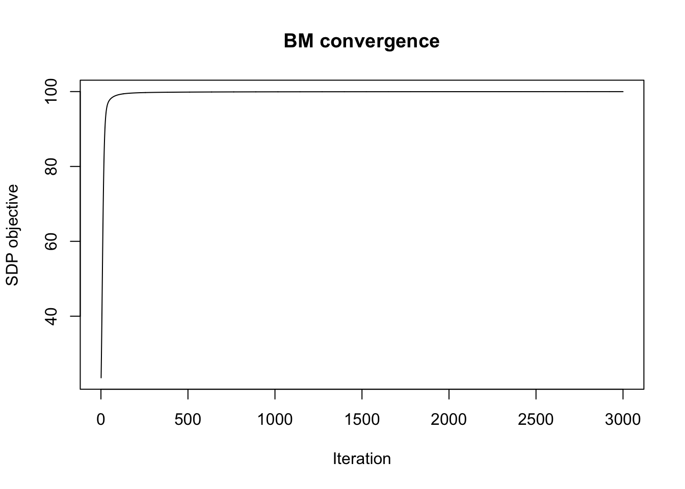
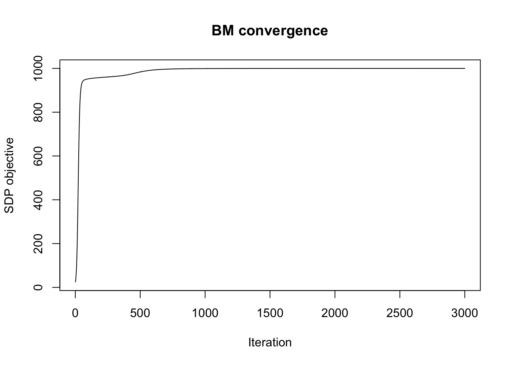

Last updated: 2026-08-13
Checks: 7 0
Knit directory: misc/analysis/
This reproducible R Markdown analysis was created with workflowr (version 1.7.2). The Checks tab describes the reproducibility checks that were applied when the results were created. The Past versions tab lists the development history.
Great! Since the R Markdown file has been committed to the Git repository, you know the exact version of the code that produced these results.
Great job! The global environment was empty. Objects defined in the global environment can affect the analysis in your R Markdown file in unknown ways. For reproduciblity it’s best to always run the code in an empty environment.
The command set.seed(1) was run prior to running the code in the R Markdown file. Setting a seed ensures that any results that rely on randomness, e.g. subsampling or permutations, are reproducible.
Great job! Recording the operating system, R version, and package versions is critical for reproducibility.
Nice! There were no cached chunks for this analysis, so you can be confident that you successfully produced the results during this run.
Great job! Using relative paths to the files within your workflowr project makes it easier to run your code on other machines.
Great! You are using Git for version control. Tracking code development and connecting the code version to the results is critical for reproducibility.
The results in this page were generated with repository version e50c51b. See the Past versions tab to see a history of the changes made to the R Markdown and HTML files.
Note that you need to be careful to ensure that all relevant files for the analysis have been committed to Git prior to generating the results (you can use wflow_publish or wflow_git_commit). workflowr only checks the R Markdown file, but you know if there are other scripts or data files that it depends on. Below is the status of the Git repository when the results were generated:
Ignored files:
Ignored: .DS_Store
Ignored: .Rhistory
Ignored: .Rproj.user/
Ignored: .claude/
Ignored: GSE87571/
Ignored: analysis/.RData
Ignored: analysis/.Rhistory
Ignored: analysis/ALStruct_cache/
Ignored: analysis/binary_quad_comparison_cache/
Ignored: analysis/ebproj_01.html
Ignored: analysis/gset_G63_cache/
Ignored: data/.Rhistory
Ignored: data/methylation-data-for-matthew.rds
Ignored: data/pbmc/
Ignored: data/pbmc_purified.RData
Untracked files:
Untracked: .dropbox
Untracked: GSE41037/
Untracked: Icon
Untracked: Rplots.pdf
Untracked: analysis/GHstan.Rmd
Untracked: analysis/GTEX-cogaps.Rmd
Untracked: analysis/PACS.Rmd
Untracked: analysis/Rplot.png
Untracked: analysis/SPCAvRP.rmd
Untracked: analysis/abf_comparisons.Rmd
Untracked: analysis/admm_02.Rmd
Untracked: analysis/admm_03.Rmd
Untracked: analysis/binary_quad_comparison.Rmd
Untracked: analysis/bispca.Rmd
Untracked: analysis/cache/
Untracked: analysis/cholesky.Rmd
Untracked: analysis/compare-transformed-models.Rmd
Untracked: analysis/cormotif.Rmd
Untracked: analysis/cp_ash.Rmd
Untracked: analysis/eQTL.perm.rand.pdf
Untracked: analysis/eb_power2.Rmd
Untracked: analysis/eb_prepilot.Rmd
Untracked: analysis/eb_var.Rmd
Untracked: analysis/ebpmf1.Rmd
Untracked: analysis/ebpmf_sla_text.Rmd
Untracked: analysis/ebproj_01.Rmd
Untracked: analysis/ebproj_newton.Rmd
Untracked: analysis/ebspca_sims.Rmd
Untracked: analysis/explore_psvd.Rmd
Untracked: analysis/fa_check_identify.Rmd
Untracked: analysis/fa_iterative.Rmd
Untracked: analysis/fastica_heated.Rmd
Untracked: analysis/fastica_unwhitened.Rmd
Untracked: analysis/flash_cov_overlapping_groups_init.Rmd
Untracked: analysis/flash_test_tree.Rmd
Untracked: analysis/flashier_newgroups.Rmd
Untracked: analysis/flashier_nmf_triples.Rmd
Untracked: analysis/flashier_pbmc.Rmd
Untracked: analysis/flashier_snn_shifted_prior.Rmd
Untracked: analysis/greedy_ebpmf_exploration_00.Rmd
Untracked: analysis/gset_G63.Rmd
Untracked: analysis/ieQTL.perm.rand.pdf
Untracked: analysis/lasso_em_03.Rmd
Untracked: analysis/m6amash.Rmd
Untracked: analysis/mash_bhat_z.Rmd
Untracked: analysis/mash_ieqtl_permutations.Rmd
Untracked: analysis/matrix_beta.Rmd
Untracked: analysis/meth_flash_01.Rmd
Untracked: analysis/methylation_example.Rmd
Untracked: analysis/mixsqp.Rmd
Untracked: analysis/mr.ash_lasso_init.Rmd
Untracked: analysis/mr.mash.test.Rmd
Untracked: analysis/mr_ash_modular.Rmd
Untracked: analysis/mr_ash_parameterization.Rmd
Untracked: analysis/mr_ash_ridge.Rmd
Untracked: analysis/mv_gaussian_message_passing.Rmd
Untracked: analysis/nejm.Rmd
Untracked: analysis/nmf_bg.Rmd
Untracked: analysis/nonneg_underapprox.Rmd
Untracked: analysis/normal_conditional_on_r2.Rmd
Untracked: analysis/normalize.Rmd
Untracked: analysis/pbmc.Rmd
Untracked: analysis/pca_binary_weighted.Rmd
Untracked: analysis/pca_l1.Rmd
Untracked: analysis/poisson_nmf_approx.Rmd
Untracked: analysis/poisson_shrink.Rmd
Untracked: analysis/poisson_transform.Rmd
Untracked: analysis/qrnotes.txt
Untracked: analysis/ridge_iterative_02.Rmd
Untracked: analysis/ridge_iterative_splitting.Rmd
Untracked: analysis/samps/
Untracked: analysis/sc_bimodal.Rmd
Untracked: analysis/shrinkage_comparisons_changepoints.Rmd
Untracked: analysis/susie_cov.Rmd
Untracked: analysis/susie_en.Rmd
Untracked: analysis/susie_z_investigate.Rmd
Untracked: analysis/svd-timing.Rmd
Untracked: analysis/temp.RDS
Untracked: analysis/temp.Rmd
Untracked: analysis/test-figure/
Untracked: analysis/test.Rmd
Untracked: analysis/test.Rpres
Untracked: analysis/test.md
Untracked: analysis/test_qr.R
Untracked: analysis/test_sparse.Rmd
Untracked: analysis/tree_dist_top_eigenvector.Rmd
Untracked: analysis/z.txt
Untracked: code/coordinate_descent_symNMF.R
Untracked: code/multivariate_testfuncs.R
Untracked: code/rqb.hacked.R
Untracked: data/4matthew/
Untracked: data/4matthew2/
Untracked: data/E-MTAB-2805.processed.1/
Untracked: data/ENSG00000156738.Sim_Y2.RDS
Untracked: data/G63
Untracked: data/GDS5363_full.soft.gz
Untracked: data/GSE41265_allGenesTPM.txt
Untracked: data/Muscle_Skeletal.ACTN3.pm1Mb.RDS
Untracked: data/P.rds
Untracked: data/Thyroid.FMO2.pm1Mb.RDS
Untracked: data/bmass.HaemgenRBC2016.MAF01.Vs2.MergedDataSources.200kRanSubset.ChrBPMAFMarkerZScores.vs1.txt.gz
Untracked: data/bmass.HaemgenRBC2016.Vs2.NewSNPs.ZScores.hclust.vs1.txt
Untracked: data/bmass.HaemgenRBC2016.Vs2.PreviousSNPs.ZScores.hclust.vs1.txt
Untracked: data/eb_prepilot/
Untracked: data/finemap_data/fmo2.sim/b.txt
Untracked: data/finemap_data/fmo2.sim/dap_out.txt
Untracked: data/finemap_data/fmo2.sim/dap_out2.txt
Untracked: data/finemap_data/fmo2.sim/dap_out2_snp.txt
Untracked: data/finemap_data/fmo2.sim/dap_out_snp.txt
Untracked: data/finemap_data/fmo2.sim/data
Untracked: data/finemap_data/fmo2.sim/fmo2.sim.config
Untracked: data/finemap_data/fmo2.sim/fmo2.sim.k
Untracked: data/finemap_data/fmo2.sim/fmo2.sim.k4.config
Untracked: data/finemap_data/fmo2.sim/fmo2.sim.k4.snp
Untracked: data/finemap_data/fmo2.sim/fmo2.sim.ld
Untracked: data/finemap_data/fmo2.sim/fmo2.sim.snp
Untracked: data/finemap_data/fmo2.sim/fmo2.sim.z
Untracked: data/finemap_data/fmo2.sim/pos.txt
Untracked: data/logm.csv
Untracked: data/m.cd.RDS
Untracked: data/m.cdu.old.RDS
Untracked: data/m.new.cd.RDS
Untracked: data/m.old.cd.RDS
Untracked: data/mainbib.bib.old
Untracked: data/mat.csv
Untracked: data/mat.txt
Untracked: data/mat_new.csv
Untracked: data/matrix_lik.rds
Untracked: data/paintor_data/
Untracked: data/running_data_chris.csv
Untracked: data/running_data_matthew.csv
Untracked: data/temp.txt
Untracked: data/y.txt
Untracked: data/y_f.txt
Untracked: data/zscore_jointLCLs_m6AQTLs_susie_eQTLpruned.rds
Untracked: data/zscore_jointLCLs_random.rds
Untracked: explore_udi.R
Untracked: output/fit.k10.rds
Untracked: output/fit.nn.pbmc.purified.rds
Untracked: output/fit.nn.rds
Untracked: output/fit.nn.s.001.rds
Untracked: output/fit.nn.s.01.rds
Untracked: output/fit.nn.s.1.rds
Untracked: output/fit.nn.s.10.rds
Untracked: output/fit.snn.s.001.rds
Untracked: output/fit.snn.s.01.nninit.rds
Untracked: output/fit.snn.s.01.rds
Untracked: output/fit.varbvs.RDS
Untracked: output/fit2.nn.pbmc.purified.rds
Untracked: output/glmnet.fit.RDS
Untracked: output/snn07.txt
Untracked: output/snn34.txt
Untracked: output/test.bv.txt
Untracked: output/test.gamma.txt
Untracked: output/test.hyp.txt
Untracked: output/test.log.txt
Untracked: output/test.param.txt
Untracked: output/test2.bv.txt
Untracked: output/test2.gamma.txt
Untracked: output/test2.hyp.txt
Untracked: output/test2.log.txt
Untracked: output/test2.param.txt
Untracked: output/test3.bv.txt
Untracked: output/test3.gamma.txt
Untracked: output/test3.hyp.txt
Untracked: output/test3.log.txt
Untracked: output/test3.param.txt
Untracked: output/test4.bv.txt
Untracked: output/test4.gamma.txt
Untracked: output/test4.hyp.txt
Untracked: output/test4.log.txt
Untracked: output/test4.param.txt
Untracked: output/test5.bv.txt
Untracked: output/test5.gamma.txt
Untracked: output/test5.hyp.txt
Untracked: output/test5.log.txt
Untracked: output/test5.param.txt
Unstaged changes:
Modified: .gitignore
Modified: analysis/eb_snmu.Rmd
Modified: analysis/ebnm_binormal.Rmd
Modified: analysis/ebpower.Rmd
Modified: analysis/fastica_asymmetric_03.Rmd
Modified: analysis/flashier_log1p.Rmd
Modified: analysis/flashier_sla_text.Rmd
Modified: analysis/logistic_z_scores.Rmd
Modified: analysis/mr_ash_pen.Rmd
Modified: analysis/nmu_em.Rmd
Modified: analysis/susie_flash.Rmd
Modified: analysis/tap_free_energy.Rmd
Modified: misc.Rproj
Note that any generated files, e.g. HTML, png, CSS, etc., are not included in this status report because it is ok for generated content to have uncommitted changes.
These are the previous versions of the repository in which changes were made to the R Markdown (analysis/burer_monteiro.Rmd) and HTML (docs/burer_monteiro.html) files. If you’ve configured a remote Git repository (see ?wflow_git_remote), click on the hyperlinks in the table below to view the files as they were in that past version.
| File | Version | Author | Date | Message |
|---|---|---|---|---|
| Rmd | e50c51b | Matthew Stephens | 2026-08-13 | Add BM experiments with multiple planted vectors, unbalanced groups, |
I want to experiment with the Burer-Monteiro approach to solving an SDP.
My overall interest is finding a v to maximize v’Pv subject to v is binary (-1,1). The classic SDP approach is to replace this with maximize tr(PV) subject to diag(V)=1 and V is psd. Then to take a random vector r and split the points according to Vr.
The BM approach avoids solving the full SDP by assuming V=YY’ for some nxr matrix Y where r is small-ish. Then optimize Y by gradient-based methods. According to Gemini, the theory suggests choosing r=sqrt(n) but smaller r may work well.
In my case P=UU’ for some orthogonal U, so we want to maximize tr(UU’YY’) subject to diag(YY’)=1 using a gradient-based method.
I’ll use Claude to help me write a function to do this.
We compare this approach with two other approaches: i) the simple heuristic of using \(Y\) to be the row-normalized \(U\). This is effectively trying to solve the split using random projections onto the column space of \(U\).ii) fastICA.
The objective is \(\text{tr}(UU'YY') = \|U'Y\|_F^2\), and the constraint \(\text{diag}(YY')=1\) means each row of \(Y\) lies on the unit sphere. This is Riemannian optimization on the product of \(n\) unit spheres. Note that the BM objective is not a true upper bound on the binary problem: binary solutions \(v\) are feasible for BM (set \(Y = v\), since \(|v_i|=1\)), so the global BM optimum \(\geq\) binary optimum, but gradient ascent only finds local optima and can fall below the best binary solution found by rounding.
This was written by Claude.
The Euclidean gradient is \(\nabla_Y f = 2UU'Y\). The Riemannian gradient for row \(i\) subtracts the normal component: \(\tilde{g}_i = g_i - (g_i \cdot y_i) y_i\). After a gradient step, we retract back to the sphere by normalizing each row.
After finding \(Y\), we round to a binary vector via random hyperplane rounding: draw \(g \sim N(0,I_r)\) and return \(v = \text{sign}(Yg)\).
#' Burer-Monteiro approach to maximizing v'UU'v subject to v in {-1,1}^n
#'
#' @param U n x k orthonormal matrix (P = UU')
#' @param r rank of the BM factorization (default: ceil(sqrt(n)))
#' @param n_iter number of gradient ascent iterations
#' @param step_size Riemannian gradient ascent step size
#' @param seed random seed for initialization
#' @return list with Y (n x r factor), obj_history, and SDP objective value
burer_monteiro_fit <- function(U, r = NULL, n_iter = 2000, step_size = 0.05, seed = 1) {
n <- nrow(U)
k <- ncol(U)
if (is.null(r)) r <- max(2L, ceiling(sqrt(n)))
set.seed(seed)
# Initialize Y with rows on unit sphere
Y <- matrix(rnorm(n * r), n, r)
Y <- Y / sqrt(rowSums(Y^2))
obj_history <- numeric(n_iter)
for (iter in seq_len(n_iter)) {
# Euclidean gradient: 2 * UU' Y (compute as U (U'Y) for efficiency)
UtY <- crossprod(U, Y) # k x r
grad <- 2 * (U %*% UtY) # n x r = 2 UU'Y
# Riemannian gradient: project out normal (row-wise)
dots <- rowSums(grad * Y) # n-vector: <grad_i, y_i>
rgrad <- grad - dots * Y # n x r
# Gradient ascent + retraction (normalize rows)
Y <- Y + step_size * rgrad
Y <- Y / sqrt(rowSums(Y^2))
# Objective: tr(UU' YY') = ||U'Y||_F^2
UtY <- crossprod(U, Y)
obj_history[iter] <- sum(UtY^2)
}
list(Y = Y, obj_history = obj_history, sdp_obj = tail(obj_history, 1))
}
#' Round BM solution Y to binary vector via random hyperplane rounding
#'
#' @param Y n x r matrix from burer_monteiro_fit
#' @param U n x k matrix (to evaluate objective)
#' @param n_rounds number of random hyperplanes to try
#' @param seed random seed
#' @return list with v (best binary vector) and obj (v'UU'v)
bm_round <- function(Y, U, n_rounds = 200, seed = 42) {
set.seed(seed)
r <- ncol(Y)
best_v <- NULL
best_obj <- -Inf
best_x <- NULL
best_w <- NULL
for (i in seq_len(n_rounds)) {
w <- rnorm(r)
x <- drop(Y %*% w)
v <- sign(x)
obj <- sum(crossprod(U, v)^2) # ||U'v||^2 = v'Pv
if (obj > best_obj) {
best_obj <- obj
best_v <- v
best_x <- x
best_w <- w
}
}
list(v = best_v, x = best_x, w=best_w, obj = best_obj)
}
#' Run fastICA n_runs times and return the binarized component with the best v'Pv objective
fastica_best <- function(U, n_comp, n_runs = 10) {
best_v <- NULL
best_obj <- -Inf
for (run in seq_len(n_runs)) {
fit <- fastICA::fastICA(U, n.comp = n_comp)
for (j in seq_len(n_comp)) {
v_j <- sign(fit$S[, j])
obj_j <- sum(crossprod(U, v_j)^2)
if (obj_j > best_obj) { best_obj <- obj_j; best_v <- v_j }
}
}
list(v = best_v, obj = best_obj)
}Generate a random \(P = UU'\), run BM, and compare the rounded solution to a brute-force search over random binary vectors.
The first issue is to generate a random U with a planted binary (-1,1) vector. In initial explorations it seems that exactly how you do this can affect the results quite a lot, and this might be worth understanding better. Here I generate the first column of U as a planted vector and the remaining columns as a uniform at random among vectors orthogonal to the planted vector.
# Simulate U with n_plant planted binary vectors (need not be orthogonal to each other).
# P = UU' projects onto the span of the planted vectors plus k-n_plant noise directions,
# so every planted vector achieves v'Pv = n (the maximum).
sim_U = function(n, k, seed, n_plant = 1, p = 0.5) {
set.seed(seed)
# 1. Generate n_plant random ±1 vectors and find an orthonormal basis for their span
V_raw <- matrix(sample(c(-1, 1), n * n_plant, replace = TRUE, prob = c(1-p, p)), n, n_plant)
V <- V_raw / rep(sqrt(colSums(V_raw^2)), each = n)
planted <- qr.Q(qr(V)) # n x rank(V); handles collinear vectors
m_eff <- ncol(planted)
# 2. Random noise for remaining k - m_eff dimensions, projected off the planted span
noise <- matrix(rnorm(n * (k - m_eff)), n, k - m_eff)
noise_orth <- noise - planted %*% crossprod(planted, noise)
U_noise <- qr.Q(qr(noise_orth))
list(U = cbind(planted, U_noise), v_true = V_raw)
}First we try small k so everything should work:
n <- 100
k <- 5
sim <- sim_U(n, k, seed = 1)
U <- sim$U
v_truth <- sim$v_true[, 1]
# Baseline: round random projections of row-normalized U
U_rownorm <- U / sqrt(rowSums(U^2))
baseline <- bm_round(U_rownorm, U, n_rounds = 5000)
brute_best_v <- baseline$v
brute_obj <- baseline$obj
# Burer-Monteiro
fit <- burer_monteiro_fit(U, r = 8, n_iter = 3000, step_size = 0.05)
rnd <- bm_round(fit$Y, U, n_rounds = 500)
# Convergence plot
plot(fit$obj_history, type = "l", xlab = "Iteration", ylab = "SDP objective",
main = "BM convergence")#fastICA
fica <- fastica_best(U, n_comp = k)
v_fica <- fica$v
obj_fica <- fica$obj
obj_truth <- sum(crossprod(U, v_truth)^2)
knitr::kable(data.frame(
Method = c("Planted truth", "BM rounded", "Baseline (row-norm U)", "fastICA binarized", "BM continuous (Y)"),
Objective = round(c(obj_truth, rnd$obj, brute_obj, obj_fica, fit$sdp_obj), 2),
Cor_truth = round(c(1, cor(rnd$v, v_truth), cor(brute_best_v, v_truth), abs(cor(v_fica, v_truth)), NA), 3)
), col.names = c("Method", "Objective", "Cor. with truth"))| Method | Objective | Cor. with truth |
|---|---|---|
| Planted truth | 100 | 1 |
| BM rounded | 100 | 1 |
| Baseline (row-norm U) | 100 | 1 |
| fastICA binarized | 100 | 1 |
| BM continuous (Y) | 100 | NA |
Now try larger \(k = 20\). Here the BM method solves the SDP adequately (it achieves the same objective as the planted truth) but the rounded solution is almost orthogonal to the truth, and achieves only 85% of the optimal objective. In contrast, fastICA (run 10 times here) finds the optimal.
n <- 100
k <- 20
sim <- sim_U(n, k, seed = 1)
U <- sim$U
v_truth <- sim$v_true[, 1]
# Baseline: round random projections of row-normalized U
U_rownorm <- U / sqrt(rowSums(U^2))
baseline <- bm_round(U_rownorm, U, n_rounds = 5000)
brute_best_v <- baseline$v
brute_obj <- baseline$obj
# Burer-Monteiro
fit <- burer_monteiro_fit(U, r = 8, n_iter = 3000, step_size = 0.05)
rnd <- bm_round(fit$Y, U, n_rounds = 500)
# Convergence plot
plot(fit$obj_history, type = "l", xlab = "Iteration", ylab = "SDP objective",
main = "BM convergence")
#fastICA
fica <- fastica_best(U, n_comp = k)
v_fica <- fica$v
obj_fica <- fica$obj
obj_truth <- sum(crossprod(U, v_truth)^2)
knitr::kable(data.frame(
Method = c("Planted truth", "BM rounded", "Baseline (row-norm U)", "fastICA binarized", "BM continuous (Y)"),
Objective = round(c(obj_truth, rnd$obj, brute_obj, obj_fica, fit$sdp_obj), 2),
Cor_truth = round(c(1, cor(rnd$v, v_truth), cor(brute_best_v, v_truth), abs(cor(v_fica, v_truth)), NA), 3)
), col.names = c("Method", "Objective", "Cor. with truth"))| Method | Objective | Cor. with truth |
|---|---|---|
| Planted truth | 100.00 | 1.000 |
| BM rounded | 84.33 | -0.820 |
| Baseline (row-norm U) | 82.72 | 0.079 |
| fastICA binarized | 100.00 | 1.000 |
| BM continuous (Y) | 99.98 | NA |
Now try larger \(n=1000, k=20\); all the methods work. (Here fastICA only needs running once)
n <- 1000
k= 20
sim <- sim_U(n, k, seed = 1)
U <- sim$U
v_truth <- sim$v_true[, 1]
# Baseline: round random projections of row-normalized U
U_rownorm <- U / sqrt(rowSums(U^2))
baseline <- bm_round(U_rownorm, U, n_rounds = 5000)
brute_best_v <- baseline$v
brute_obj <- baseline$obj
# Burer-Monteiro
fit <- burer_monteiro_fit(U, r = 8, n_iter = 3000, step_size = 0.05)
rnd <- bm_round(fit$Y, U, n_rounds = 500)
# Convergence plot
plot(fit$obj_history, type = "l", xlab = "Iteration", ylab = "SDP objective",
main = "BM convergence")
#fastICA
fica <- fastica_best(U, n_comp = k, n_runs=1)
v_fica <- fica$v
obj_fica <- fica$obj
obj_truth <- sum(crossprod(U, v_truth)^2)
knitr::kable(data.frame(
Method = c("Planted truth", "BM rounded", "Baseline (row-norm U)", "fastICA binarized", "BM continuous (Y)"),
Objective = round(c(obj_truth, rnd$obj, brute_obj, obj_fica, fit$sdp_obj), 2),
Cor_truth = round(c(1, cor(rnd$v, v_truth), cor(brute_best_v, v_truth), abs(cor(v_fica, v_truth)), NA), 3)
), col.names = c("Method", "Objective", "Cor. with truth"))| Method | Objective | Cor. with truth |
|---|---|---|
| Planted truth | 1000.00 | 1.00 |
| BM rounded | 1000.00 | -1.00 |
| Baseline (row-norm U) | 726.91 | -0.73 |
| fastICA binarized | 1000.00 | 1.00 |
| BM continuous (Y) | 999.97 | NA |
Now try larger \(k = 60\), \(n=1000\). (I pushed it to 60 to make the BM method not work) Here I had to increase r in the BM method to get it to find an objective that matches the known optimal. I found that the fastICA method sometimes found the truth; with this seed I had to increase the repeats to 20 to get it to find the truth.
n <- 1000
k= 60
sim <- sim_U(n, k, seed = 1)
U <- sim$U
v_truth <- sim$v_true[, 1]
# Baseline: round random projections of row-normalized U
U_rownorm <- U / sqrt(rowSums(U^2))
baseline <- bm_round(U_rownorm, U, n_rounds = 5000)
brute_best_v <- baseline$v
brute_obj <- baseline$obj
# Burer-Monteiro
fit <- burer_monteiro_fit(U, r = 30, n_iter = 3000, step_size = 0.05)
rnd <- bm_round(fit$Y, U, n_rounds = 500)
# Convergence plot
plot(fit$obj_history, type = "l", xlab = "Iteration", ylab = "SDP objective",
main = "BM convergence")#fastICA
fica <- fastica_best(U, n_comp = k, n_runs=20)
v_fica <- fica$v
obj_fica <- fica$obj
obj_truth <- sum(crossprod(U, v_truth)^2)
knitr::kable(data.frame(
Method = c("Planted truth", "BM rounded", "Baseline (row-norm U)", "fastICA binarized", "BM continuous (Y)"),
Objective = round(c(obj_truth, rnd$obj, brute_obj, obj_fica, fit$sdp_obj), 2),
Cor_truth = round(c(1, cor(rnd$v, v_truth), cor(brute_best_v, v_truth), abs(cor(v_fica, v_truth)), NA), 3)
), col.names = c("Method", "Objective", "Cor. with truth"))| Method | Objective | Cor. with truth |
|---|---|---|
| Planted truth | 1000.00 | 1.000 |
| BM rounded | 712.86 | 0.662 |
| Baseline (row-norm U) | 696.56 | -0.103 |
| fastICA binarized | 1000.00 | 1.000 |
| BM continuous (Y) | 999.67 | NA |
Now I’ll run fastICA initializing from the BM solution (which here is already 61% correlated with the truth). Interestingly, it does not move much.
fastica_r1update = function(X,w){
w= w/sqrt(sum(w^2))
P = t(X) %*% w
G = tanh(P)
G2 = 1-tanh(P)^2
w = X %*% G - sum(G2) * w
return(w)
}
w = t(U) %*% rnd$x
for(i in 1:10000){
w = fastica_r1update(t(U),w)
}
cor(U %*% w, v_truth) [,1]
[1,] 0.6917269I’m interested in the case where \(U\) contains multiple different binary vectors. What I want to do is find them as local optima of some objective. I’m interested in whether the BM approach will find both vectors.
Simulate U with first two columns planted:
n <- 1000; k <- 60
sim <- sim_U(n, k, seed = 2, n_plant = 2)
U <- sim$U
v_true <- sim$v_true # n x 2 matrix of planted ±1 vectorsbest_cor_planted <- function(v, v_true) max(abs(cor(v, v_true)))
# Baseline
U_rownorm <- U / sqrt(rowSums(U^2))
baseline <- bm_round(U_rownorm, U, n_rounds = 5000)
# Burer-Monteiro
fit <- burer_monteiro_fit(U, r = 30, n_iter = 3000, step_size = 0.05)
rnd <- bm_round(fit$Y, U, n_rounds = 500)
# fastICA
fica <- fastica_best(U, n_comp = k)
v_fica <- fica$v
obj_fica <- fica$obj
knitr::kable(data.frame(
Method = c("BM rounded", "Baseline (row-norm U)", "fastICA binarized", "BM continuous (Y)"),
Objective = round(c(rnd$obj, baseline$obj, obj_fica, fit$sdp_obj), 2),
Best_cor = round(c(best_cor_planted(rnd$v, v_true),
best_cor_planted(baseline$v, v_true),
best_cor_planted(v_fica, v_true),
NA), 3)
), col.names = c("Method", "Objective", "Best cor. with planted"))| Method | Objective | Best cor. with planted |
|---|---|---|
| BM rounded | 708.85 | 0.520 |
| Baseline (row-norm U) | 694.19 | 0.188 |
| fastICA binarized | 1000.00 | 1.000 |
| BM continuous (Y) | 999.76 | NA |
Since unbalanced groups can be more difficult to find I try that case here. I simulate U with one planted column, with 0.8 -1 and 0.2 +1 (i.e. p=0.2), with \(n=1000\), \(k=20\). Here BM works but ICA does not, because (as we know) ICA does not work well for unbalanced groups. It seems the SPD approach still works for unbalanced groups (which makes sense since it was designed with max cut in mind, and so it would be a fatal flaw if it didn’t work for unbalanced cuts)
n <- 1000; k <- 20
sim <- sim_U(n, k, seed = 1, n_plant = 1, p = 0.2)
U <- sim$U
v_true <- sim$v_true
best_cor_planted <- function(v, v_true) max(abs(cor(v, v_true)))
# Baseline
U_rownorm <- U / sqrt(rowSums(U^2))
baseline <- bm_round(U_rownorm, U, n_rounds = 5000)
# Burer-Monteiro
fit <- burer_monteiro_fit(U, r = 8, n_iter = 3000, step_size = 0.05)
rnd <- bm_round(fit$Y, U, n_rounds = 500)
# fastICA
fica <- fastica_best(U, n_comp = k)
v_fica <- fica$v
obj_fica <- fica$obj
knitr::kable(data.frame(
Method = c("BM rounded", "Baseline (row-norm U)", "fastICA binarized", "BM continuous (Y)"),
Objective = round(c(rnd$obj, baseline$obj, obj_fica, fit$sdp_obj), 2),
Best_cor = round(c(best_cor_planted(rnd$v, v_true),
best_cor_planted(baseline$v, v_true),
best_cor_planted(v_fica, v_true),
NA), 3)
), col.names = c("Method", "Objective", "Best cor. with planted"))| Method | Objective | Best cor. with planted |
|---|---|---|
| BM rounded | 1000.00 | 1.000 |
| Baseline (row-norm U) | 729.05 | 0.656 |
| fastICA binarized | 709.46 | 0.024 |
| BM continuous (Y) | 999.97 | NA |
sessionInfo()R version 4.4.2 (2024-10-31)
Platform: aarch64-apple-darwin20
Running under: macOS 26.5.2
Matrix products: default
BLAS: /System/Library/Frameworks/Accelerate.framework/Versions/A/Frameworks/vecLib.framework/Versions/A/libBLAS.dylib
LAPACK: /Library/Frameworks/R.framework/Versions/4.4-arm64/Resources/lib/libRlapack.dylib; LAPACK version 3.12.0
locale:
[1] C
time zone: America/Chicago
tzcode source: internal
attached base packages:
[1] stats graphics grDevices utils datasets methods base
loaded via a namespace (and not attached):
[1] vctrs_0.7.2 cli_3.6.5 knitr_1.51 rlang_1.1.7
[5] xfun_0.56 stringi_1.8.7 otel_0.2.0 promises_1.5.0
[9] jsonlite_2.0.0 workflowr_1.7.2 glue_1.8.0 rprojroot_2.1.1
[13] git2r_0.36.2 htmltools_0.5.9 httpuv_1.6.16 sass_0.4.10
[17] rmarkdown_2.30 fastICA_1.2-7 evaluate_1.0.5 jquerylib_0.1.4
[21] tibble_3.3.1 fastmap_1.2.0 yaml_2.3.12 lifecycle_1.0.5
[25] whisker_0.4.1 stringr_1.6.0 compiler_4.4.2 fs_1.6.6
[29] Rcpp_1.1.1 pkgconfig_2.0.3 later_1.4.6 digest_0.6.39
[33] R6_2.6.1 pillar_1.11.1 magrittr_2.0.4 bslib_0.10.0
[37] tools_4.4.2 cachem_1.1.0